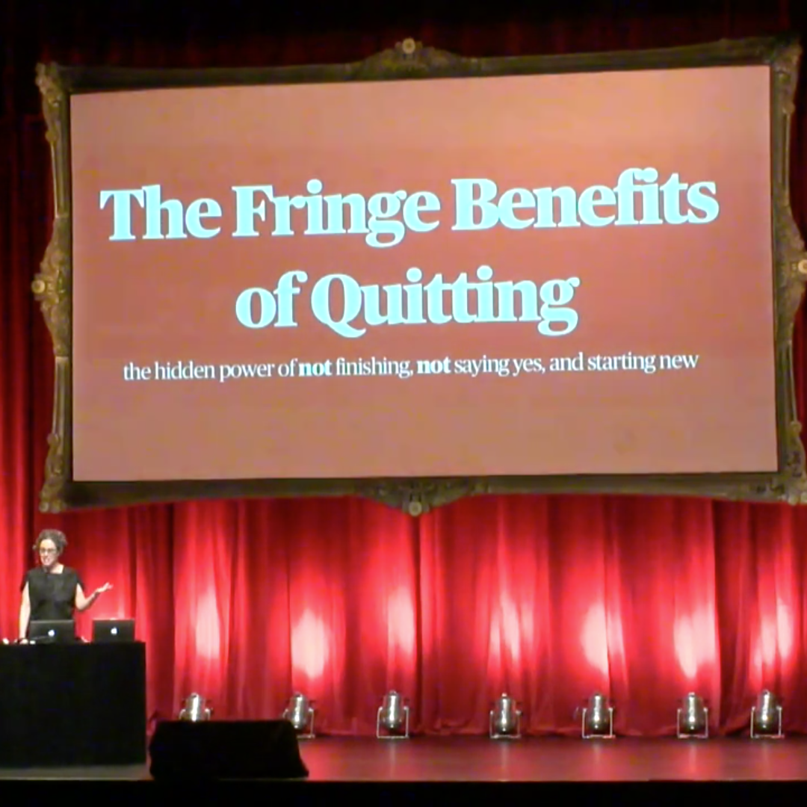

The Fringe Benefits of Quitting

What a simple, and powerful message Liz Danzico has, from which I can/will benefit. It's okay (and frequently beneficial) to quit something. While doing that, stop thinking of your time as being lost/wasted, but as a beneficial investment into your own improvement for whatever it is. It's also okay not to know exactly how to get somewhere, which may cause for some course corrections. There's a good quote from E.L. Doctorow:
It's like driving a car at night. You never see further than your headlights, but you can make the whole trip that way.
Maybe I'm overly introspective, and purpose-seeking right now, but her message rang true with me right now (Also, fittingly, I've tried to watch this video several times since its release, but just now finally knocked it out.)